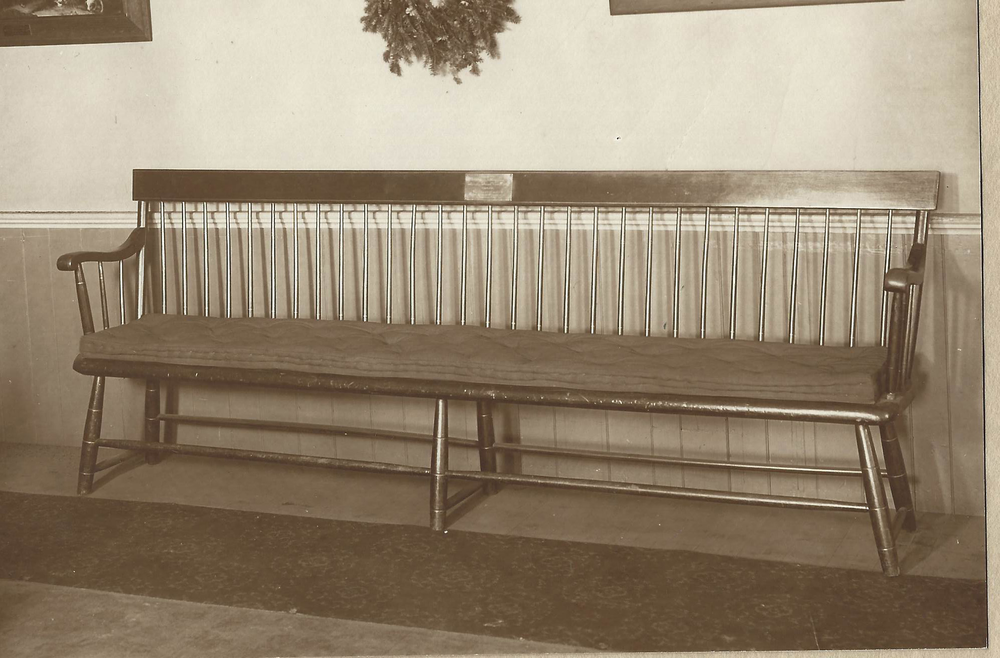

Gathered in Salem in 1629 we were the first Congregational church in America. Tabernacle has a rich and diverse history. From 1629 to the present our focus has been strongly about missions
We covanant with the Lord and one with another. And doe bynd ourselves in the presence of God to walke together in all His waies according as he is pleased to reveale Himself to us in His Blessed word of truth